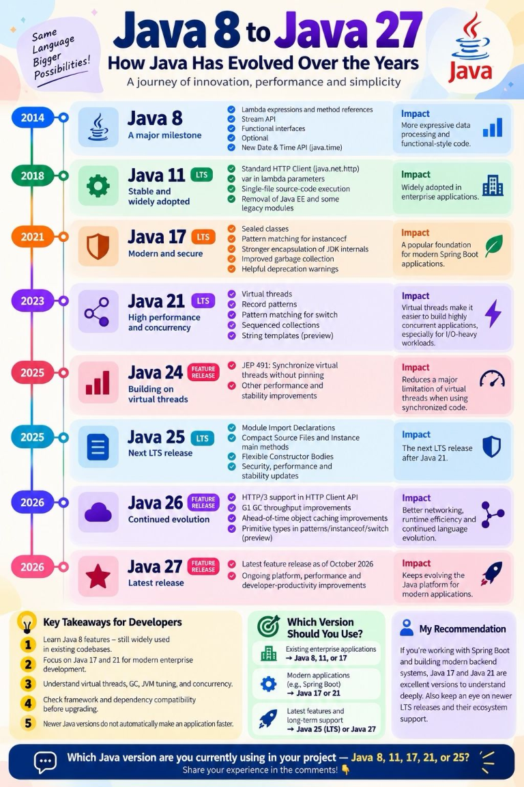
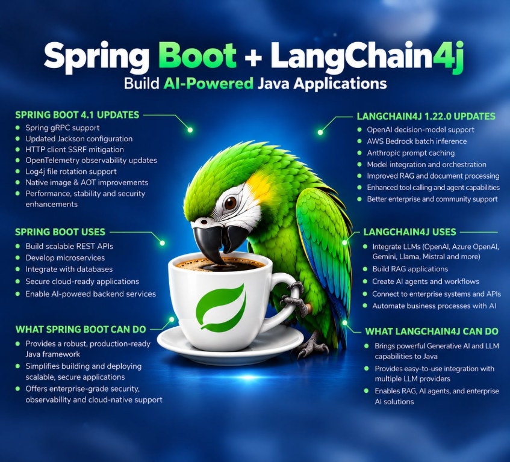

Sites for reference
Architecture
Multi-tenant best practices can backfire
Find practical engineering guides, command references, and architecture resources. Browse a topic below or use the navigation to pick up where you left off.
APIs, services, architecture, data access, integrations, and delivery patterns.
UI patterns, component design, routing, performance, and tooling best practices.
Version control, delivery pipelines, environments, and operations.
A collection of useful reading on architecture and software design.
Start with the foundations, then move into frameworks, APIs, and production practices.
From the game-changing features of Java 8 to the modern capabilities of Java 27, these are the milestones Java developers should know.

var in lambda parameters, single-file source-code execution, and improvements for enterprise applications.instanceof, stronger encapsulation, and a more modern Java platform.switch, and sequenced collections.Combine Spring Boot's production-ready Java framework with LangChain4j to build backend services that use large language models and generative AI.

An ESB is a complete integration platform that mediates communication between applications and services.
Common questions to help you explain REST API design clearly in an interview.
A REST API is an interface that exposes resources over HTTP. Clients interact with those resources using standard methods such as GET, POST, PUT, PATCH, and DELETE.
PUT usually replaces the complete resource at a known URI, while PATCH applies a partial update. PATCH is useful when only a few fields need to change.
An operation is idempotent when repeating the same request produces the same final result. GET, PUT, and DELETE are intended to be idempotent, while POST is generally not.
Use 2xx for successful requests, 3xx for redirects, 4xx for client errors such as invalid input or missing authorization, and 5xx for server-side failures.
Use HTTPS, strong authentication, authorization checks, input validation, rate limiting, secure secret handling, and consistent error responses that do not expose sensitive details.
Version the public contract when a breaking change is necessary, commonly through a path such as /api/v1 or a version header. Keep older versions supported during a planned migration period.
Choose a guide to explore frontend patterns and practical implementation examples.
Use a browser custom element to define a header once and reuse it across your HTML pages without fetching a separate fragment.
Save this as header.js. The component uses the regular document tree, so your shared stylesheet can style it as usual.
class SiteHeader extends HTMLElement {
connectedCallback() {
this.innerHTML = `
<header class="site-header">
<div class="container header-inner">
<a href="index.html" class="brand">Docuhub</a>
<nav class="main-nav" aria-label="Primary navigation">
<a href="index.html#overview">Overview</a>
<a href="index.html#backend-topics">Backend</a>
<a href="index.html#frontend-topics">Frontend</a>
<a href="index.html#devops-topics">DevOps</a>
<a href="index.html#sites-topics">Sites</a>
</nav>
</div>
</header>
`;
}
}
customElements.define('site-header', SiteHeader);Copy this into header-test.html in the same folder as header.js. The example loads the shared styles.css from the parent folder. Then open the page in your browser.
<!doctype html>
<html lang="en">
<head>
<meta charset="utf-8">
<meta name="viewport" content="width=device-width, initial-scale=1">
<title>Header component test</title>
<link rel="stylesheet" href="../styles.css">
</head>
<body>
<site-header></site-header>
<main class="container">
<h1>Header component test</h1>
<p>If the shared navigation appears above, the component loaded successfully.</p>
</main>
<script src="header.js" defer></script>
</body>
</html>Build dependable delivery pipelines, environments, and operations practices.
Multi-tenant best practices can backfire